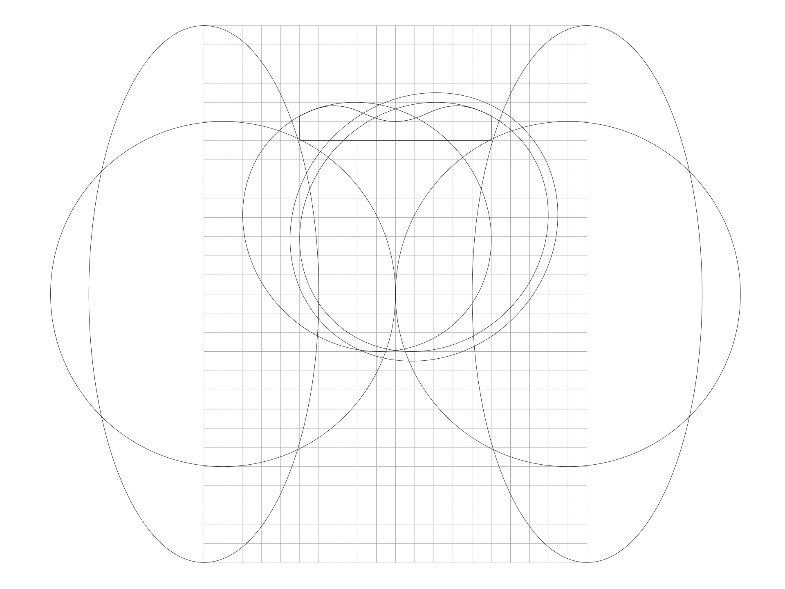
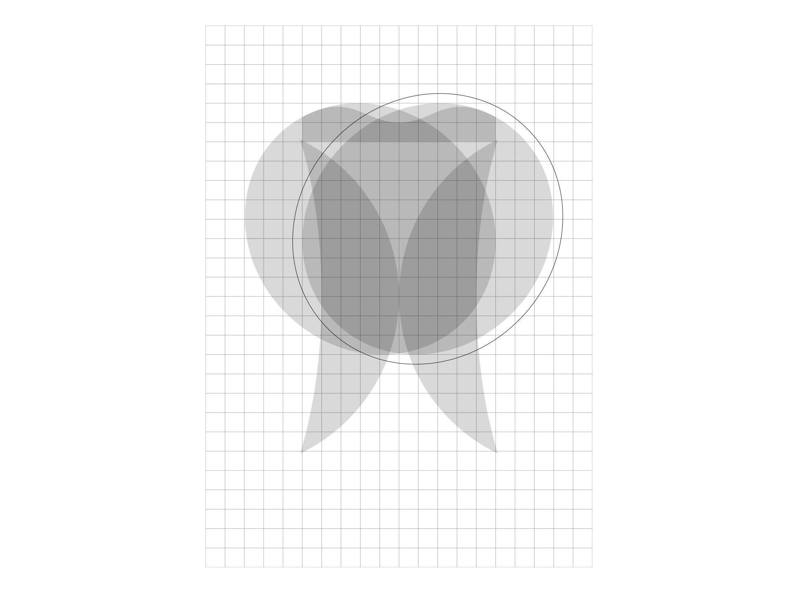
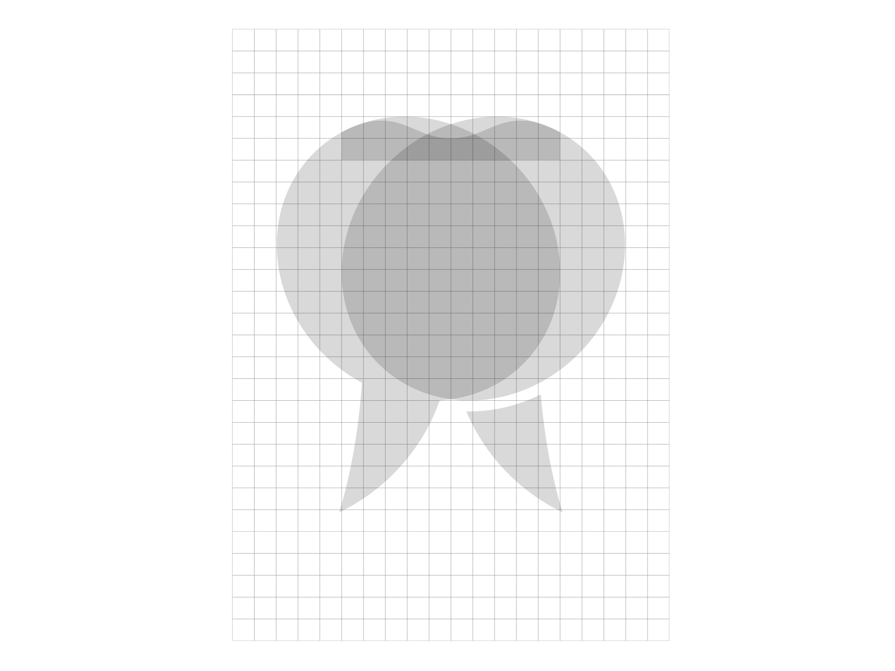
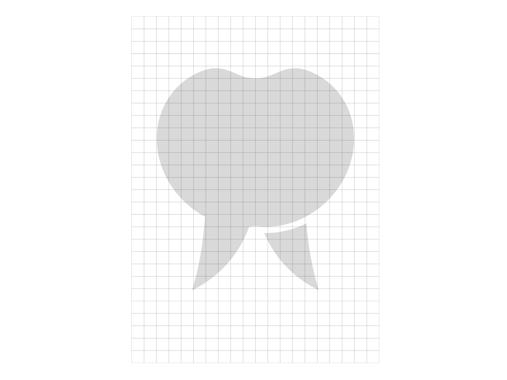
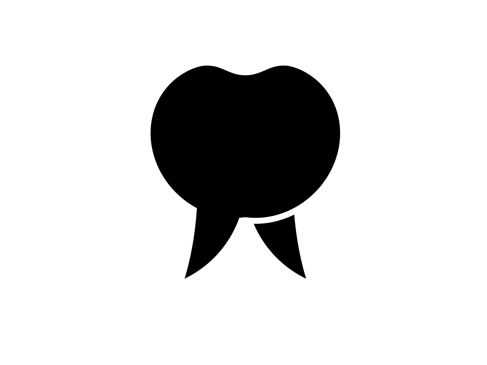
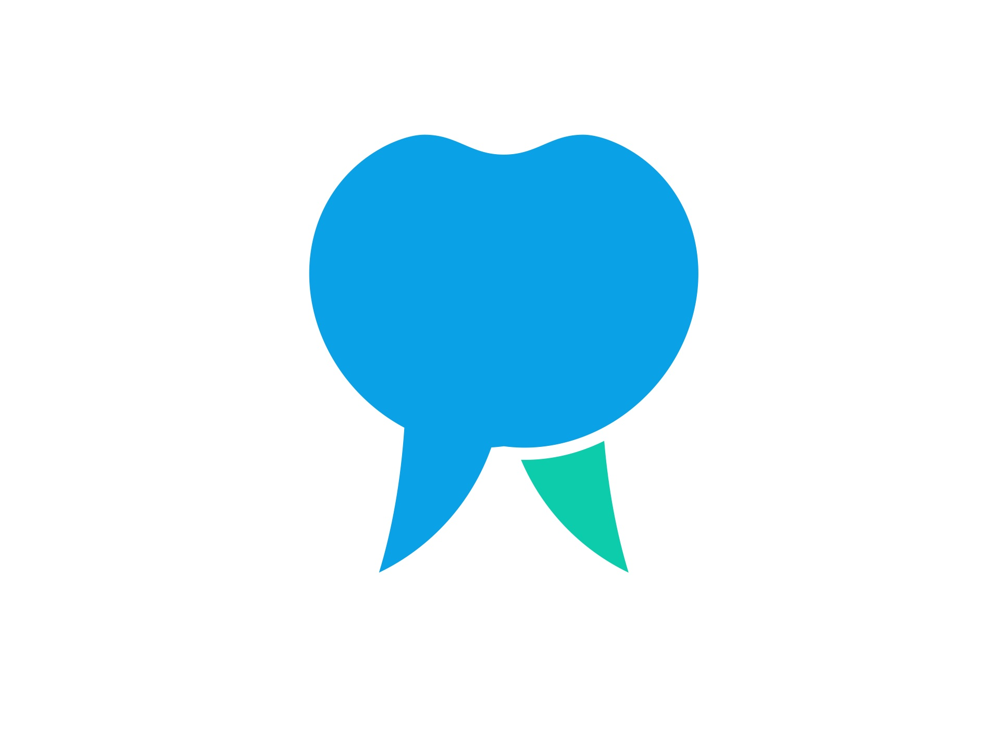
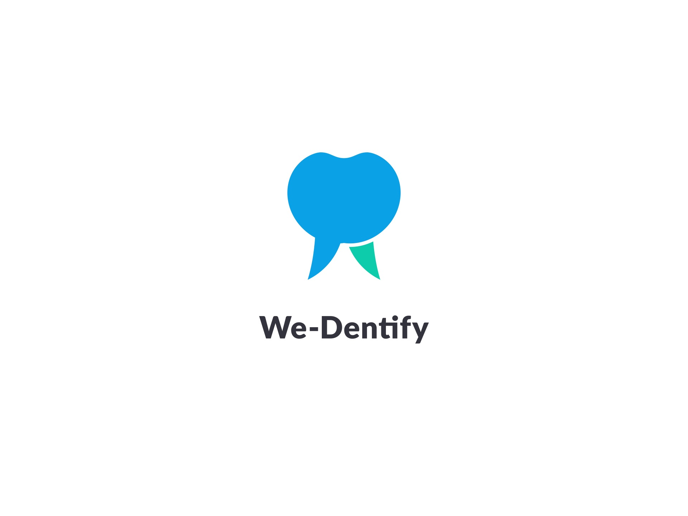
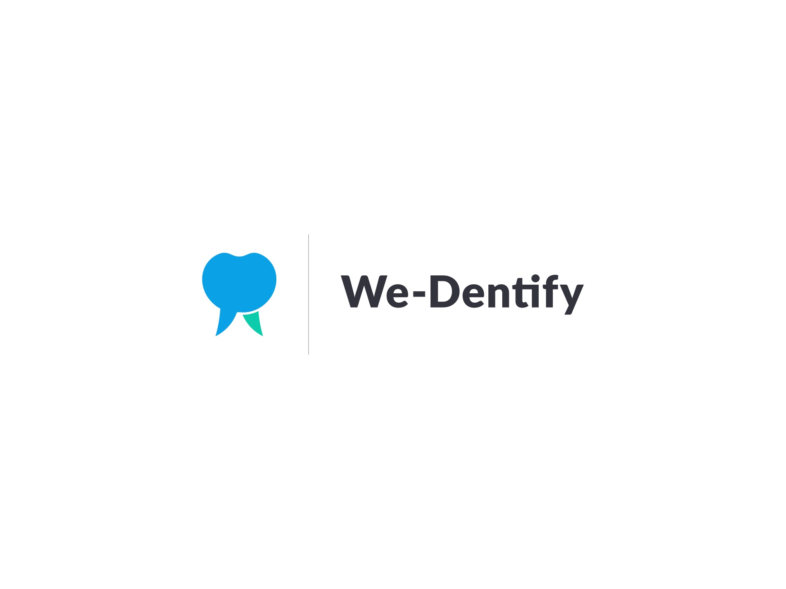
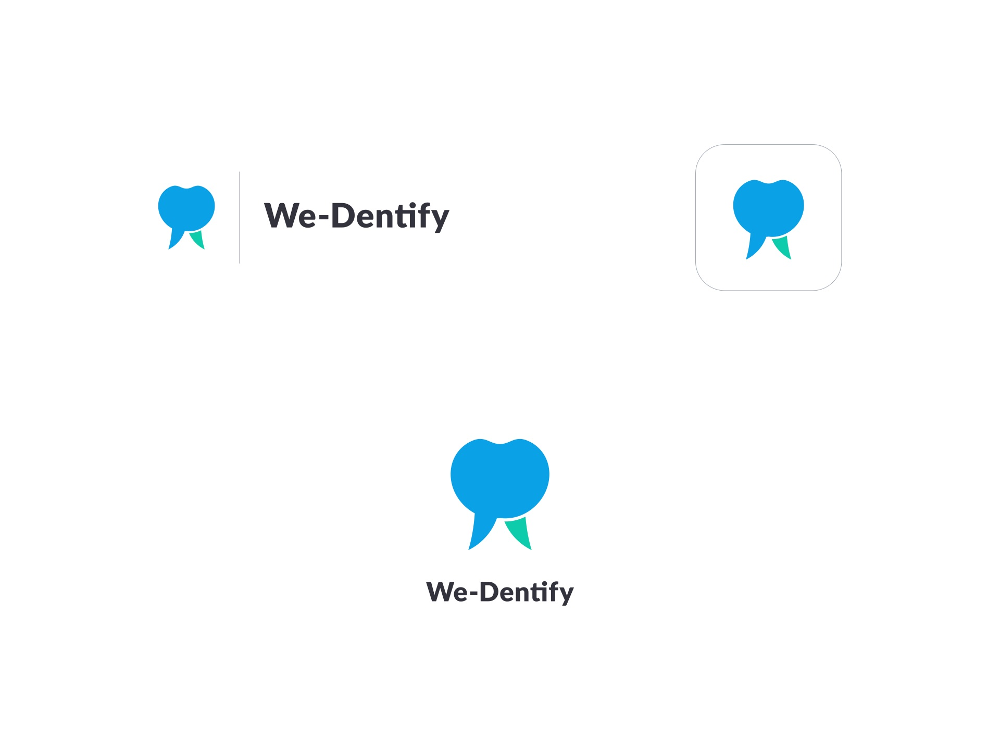
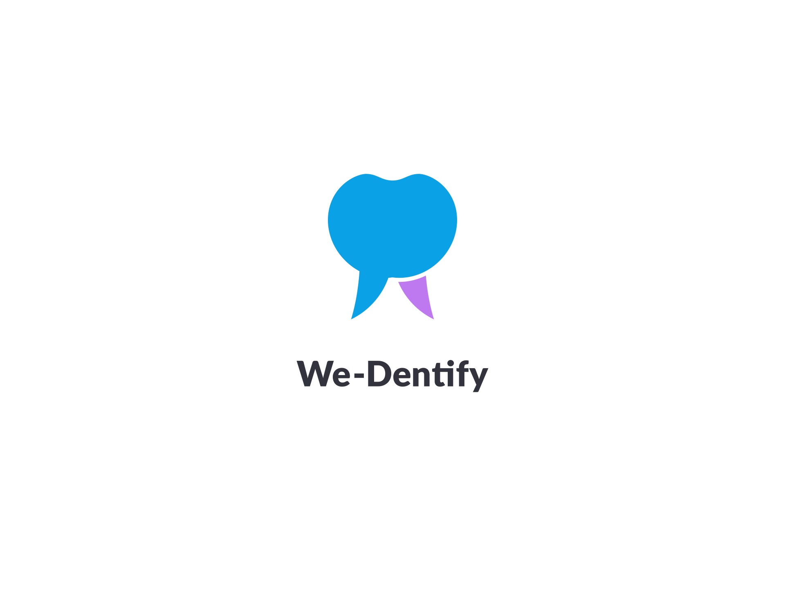

We-Dentify — a tooth that talks. (2018)
The We-Dentify logo is a tooth whose root ends in the tail of a speech bubble, with a second, coloured root beside it. It fits an app built around dentists and dental technicians talking about the same patient.

01
Construction
The shape is built from overlapping circles and ellipses on a grid, then trimmed into a single soft, rounded tooth.




02
Logomark
A single-colour mark for print and small sizes, and the full-colour version in bright blue with a teal accent.


03
Lockups & app icon
Vertical and horizontal lockups, an app icon, and checks at small sizes.



04
Colour
Bright blue with a teal accent. An alternative purple accent was also explored.
Blue
#0AA1E6Teal accent
#0DCCACPurple accent
#BE78F0Text
#33333D